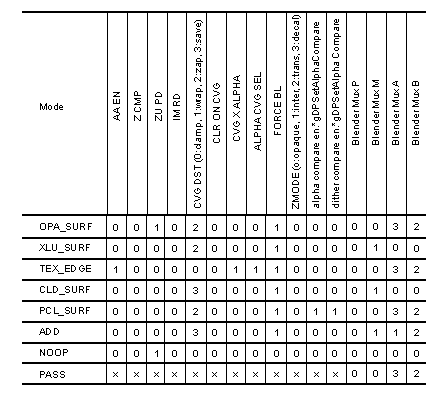

|
|
Blender Modes and Assumptions
Opaque Surface Antialiased Z-Buffer Algorithm, OPA_SURF
There are basically three different kinds of antialiasing. The first is the antialiasing of textures within polygons. This is accomplished outside of the blender by the texture hardware, using the industry standard mipmapping technique. This uses tri-linear interpolation to produce a correctly sampled texture lookup. Please see Section 13.7.4, “MIP Mapping” for further details.
The second kind of antialiasing is the blending of polygon fragments within the pixels they share. The classic example of this is the pinwheel, where alternating black and white triangles meet at a center vertex. The pixel within which this vertex lies should be the average of the colors of all the triangles which share this vertex, weighted by the area of the pixel at the vertex covered by each of the triangles.
This blending is done in the blender hardware by computing Equation 1, where p is the color of the pixel of the new poly, m is the color of the pixel in the frame buffer memory, a is the coverage value of the new poly, and b is the sum of the coverage values of all the polygons already blended into that pixel in the frame buffer. Note that no matter what order the polygon fragments come in, they will all average in correctly.
The third kind of antialiasing is the blending of the silhouette of a foreground object against the background. This is traditionally done at rendering time in the blend unit. Unfortunately, doing it at this time has bad consequences for hidden surfacing.
Consider an internal edge of a surface (i.e., an edge shared by two visible polygons not at the silhouette). A priori, when the first of the two polygons is rendered, the blender does not yet know whether it is a silhouette edge (and hence needs to be blended with the background), or an internal edge (and hence should not be blended with the background). Note that if an internal edge does blend with the background, there will be a line along the edge left when the second polygon blends with the first. Once the blending is done, there is no way to undo it. Also, note that the background may not even have been rendered yet, unless the rendering of polygons is done in depth-sorted order, which defeats the purpose of z-buffering.
The only way to deal with this is to postpone the blending of silhouette edges until after the whole scene is rendered. In fact, the final blending of the silhouette edges is done at display time by the video interface. While the details of this are beyond the scope of this document, the main point is that to do this blend on video output, there needs to be a coverage value left behind in the frame buffer, with which to interpolate between the foreground (the color of which is in the frame buffer) and the background (which is assumed to be in one or more of the neighboring pixels in the frame buffer). This interpolation is described in Equation 11, "Video Filter Interpolation."
Note that for this approach to work, we must be able to distinguish between internal edges within a surface and silhouette edges between an object and its background. This is only possible in the context of z-buffering. (If z-buffering is disabled, the internal edge blending must also be disabled, since we can no longer distinguish between internal and silhouette edges.)
In order to distinguish between an internal and a silhouette edge, we need in addition to the normal z-buffer containing depth information, some additional information so that we can tell if two polygons sharing a pixel are within the same surface or not. This added information is the slope of Z (depth) in screen space. This is computed as shown in Equation 4, "DeltaZ Calculation." The delta for the old polygon is stored in the frame buffer with the Z. The rule is then if the absolute difference in Z between the new polygon and the frame buffer is less than the max of the new DeltaZ and the frame buffer DeltaZ, then the new polygon is considered to be part of the same surface as the old polygon already in the frame buffer. If the new Z is clearly in front, it overwrites the frame buffer. If it is clearly behind, it is not written at all.
In fact, while this algorithm works as described above, it has some problems. First off, we are only representing one fragment per pixel. If there are multiple silhouettes within one pixel, there will be a slight artifact. There is some specialized hardware to reduce this effect (the divot circuit). However, some artifacts remain, and are simply tolerated.
The other, and considerably more visually obvious artifact is “punchthrough”, where part of an object which should have been occluded “punches through” the object in front of it. This is caused by the z-buffer blending range being too large, usually due to large DeltaZ’s from polygons that are very “edge on” to the viewpoint. There are two different mechanisms to prevent this artifact.
The first mechanism is to weight the weighting factors in the internal edge blend by how “edge on” they are. Polygons that are more “flat” are weighted more heavily than polygons that are more “edge on”. Thus, the punching-through polygon is attenuated relative the polygon it is punching through.
The second mechanism to prevent punchthrough is to use the wrapping of the coverage value to distinguish between contiguous surfaces and a “new” polygon that is not part of that surface. Basically, if the coverage wraps (i.e., new cvg + old cvg > 1.0), then the new polygon must not be part of the previously rendered surface (or background). In that case, instead of using the DeltaZ range, the z-buffer does a strict compare between the new and old z, ignoring the deltas, since we know the new polygon is not part of the old surface.
Note: The silhouette antialiasing part of this algorithm depends on not having shared edges across the silhouette (shared with the backfacing polygons adjacent to the silhouette). Consequently, back-facing polygons must be rejected (culled), or the coverage values at the silhouette edge will be incorrect for the display-time pass of the antialiasing algorithm. This is generally desirable in any case, since this saves the rendering time for the back-facing polygons, which should be invisible. Note that this is only a problem for closed polygonal surfaces (hulls), but not for “open” surfaces, like flags, which have “external” edges. So flag-like objects need to be represented in the display list twice, once frontfacing and once backfacing.
Transparent Surfaces, XLU_SURF
The first problem is avoiding sorting. Strictly speaking, this is impossible. In order for the colors to be correctly blended from multiple colored transparent surfaces, the surfaces need to be depth sorted (or carry around a lot of extra information, more than we have memory for), so we just don’t do the right thing.
We do require all the transparent surfaces to be rendered after the opaque surfaces, but aside from that segregation, there is no sorting of the transparent (or opaque) surfaces. So multiple colored transparent surfaces will not be quite right. First off, this case doesn’t come up much (most transparent surfaces are not colored, and it is rare for multiple transparent surfaces to line up). Secondly, even if it does, most people have had so little experience with multiple colored transparency that they don’t know what to expect. Generally speaking, rendering the transparent surfaces in the same order, regardless of depth, looks just fine.
The second problem with transparency is internal edges. Here, we cannot do what we did in the opaque surface case. The pixels at an internal edge of a transparent surface are now blended with the (previously rendered, opaque) background, as are all the pixels in the interior of the transparent poly. So if we render one polygon sharing an internal edge, and then render the other polygon sharing that same edge, we must be sure not to blend any pixel twice, or there will be a noticable line on the internal edge as a consequence of blending twice. So we just don’t blend internal edges of transparent surfaces.
In fact, this is a bit tricker than it seems. We still want the silhouette of a transparent object to be properly antialiased, so we need to be able to get the partial coverage values for the silhouette edges, without double blending the internal edges. This is done with a special mechanism provided just for transparency.
Under control of a special mode bit (CLR_ON_CVG), we can inhibit the writing of color (but not coverage) unless the coverage wraps (i.e., the sum of the old coverage in the frame buffer and the new coverage of the currently rendering polygon is greater than unity). On an internal edge of a transparent surface over a fully covered background, the first polygon will write the color, since full coverage plus any non-zero partial coverage must wrap. The coverage value is always written with the wrapped sum of the old pixel and new polygon coverage, which will be equal to the partial coverage of the new (first) poly. On the rendering of the second poly, however, the coverage values will sum to unity on the shared edge, which is not a wrap. So the second polygon will not write over the pixels on the shared edge of the first poly. Note that this works even if the underlying coverage is not unity (i.e., the transparent surface is over a pre-rendered silhouette edge), since still only one of the two transparent polygons sharing an internal edge will get to write (although it could be the second one instead of the first).
The blender in transparent surface mode uses a different form of the blend equation than for the opaque surface case. The blend equation for transparency is:
Equation 12 Blend Equation for Transparency
where p is the color of the pixel of the new poly, m is the color of the pixel in the frame buffer memory, a is the opacity (alpha) of the new poly. Note that this can be obtained from Equation 1 by setting b=(1-a).
Note that since we never blend across an internal edge, we do not need to use the DeltaZ used to condition blending in the opaque surface case. Instead, we just compare Z directly, since the transparent surface can only be either clearly in front (in which case it is written with the transparency-blended color) or clearly behind (in which case it is not written at all, including coverage).
Note also that unlike opaque surfaces, which modify depth, transparent surfaces do not modify depth (although they do read it, to test for occlusion by a previously-rendered opaque object). This is because transparent surfaces do not want to prevent the writing of other transparent surfaces which are behind them (but in front of any opaque surfaces).
Transparent Lines, XLU_LINE
The render-time antialiasing is done by multiplying the new polygon (line) coverage value with the alpha value, and using that as the alpha to do the transparency blending. This produces the correct result, due to the absence of internal edges.
The coverage value written into the frame buffer in line mode is the clamped sum of the old pixel coverage and the new line’s coverage times its alpha. For nearly opaque pixels, the coverage will be clamped to unity, making any underlying silhouette edge not be modified by the video interface at the display-time part of the antialiasing algorithm. This prevents the overlying line from being disturbed by the underlying (and hence hidden) silhouette edge. However, if the coverage times alpha from the line is nearly zero, then the silhouette edge is not disturbed, since it should be visible through the line.
Lines do read depth, and thus can be occluded by opaque objects. However, lines, like transparent and decal surfaces, do not modify depth. They are thus blended in display list order, which for thin lines should not matter.
Note that “lines” need not be degenerate triangles. In particular, for a “ray” coming from somewhere in the foreground to a vanishing point at infinity, a normal triangle, with two vertices at the source of the ray, and the third at the vanishing point, produces the desired effect. Also note that these “rays” can be textured, to produce the effect of a diffuse particle beam (or “neon glow”), or even “tracer bullets” animated by changing texture coordinate mapping in the texture unit.
Texture Edge Mode, TEX_EDGE
A textured ‘billboard’ uses alpha values of zero in the texture to define the outline of the tree. Either two billboards are crossed, or the one billboard moves to always face the eyepoint, so as to hide the two dimensional nature of the billboard. Frequently, only one bit of alpha (all or nothing) is available in the highly-packed texture modes usually used for billboards. Mipmapping can be used to maintain a properly antialiased tree texture, but at some point the eye can get close enough to the tree texture to exceed the highest level of detail. In this case the alpha will be interpolated over several pixels, creating a ‘blurry’ effect around the texture edges.
Texture edge mode simply allows the blurred alpha to be written as coverage. A blurryness in coverage does not produce a blurryness in the final image, since the backend filter simply ignores the internal partial coverage bits, recreating a sharp edge.
Decal Surfaces, OPA_DECAL, XLU_DECAL
The coverage values of the decal surface wrap (as do opaque and transparent surfaces). Note that this only works well if the edge of the decal polygons do not coincide with a silhouette edge of the underlying surface. If this is the case, it would help to use clamping for coverage since this will result in simple aliasing. Using wrap in this case fails miserably, since the coverage values are double what they should be, with some of them wrapping and some of them not. However, even clamping is wrong. So decals should never be allowed to exactly coincide with a silhouette edge of the underlying surface.
Decal surfaces, like transparent surfaces do not modify depth, since they are supposed to be coplanar with the underlying surface, which already has the correct depth.
Note that there is also a transparent version of decals, for cases where some of the underlying surface should blend through. This uses the same decal z-buffering algorithm, but is otherwise like transparent surface mode.
Decal Lines, DEC_LINE
Aside from the different z-buffer algorithm, the only other difference between transparent lines and decal lines is the coverage written into frame buffer memory. For decal lines we do not modify coverage at all. This is so we do not disturb the antialiasing of the silhouette edges.
Note that the half of the line which is “over the edge” of the silhouette will not be rendered. Consequently, while the inside edge of the decal line at the silhouette will be correctly antialiased at render time (as with transparent lines), the outside edge must still be antialiased at display time by the video interface. The coverage values at the silhouette are already correct before the decal lines are rendered. Internal edges are also already correct, since they are fully covered by the opaque surface rendering.
Note that the decal line case interacts poorly with one of the features of the video interface (the divot circuit). In particular, if a decal line is on the silhouette of an object, the divot circuit can disturb the decal lines at the silhouette. This can be avoided by not using decal lines anywhere they could be in the silhouette, or by turning off the divot circuit (at the loss of some antialiasing quality). Or it can simply be tolerated as it is. The effect is a thinning and breaking up of the decal line at the silhouette. In motion, the line doesn’t scintillate much, and so is probably tolerable.
Interpenetration, OPA_INTER, XLU_INTER
Interpenetration mode should not be used for articulated joints, or other purposes where the interpenetration is used to connect what is supposed to be a contiguous surface. If it is used in this way, unacceptable punchthrough will result. It is probably better in these cases to use normal opaque surface mode if this is really necessary. The lines of intersection will alias, but if the two surfaces are roughly the same color, this may not be too noticable. Interpenetration mode should not be used gratuitously. There is both an opaque and transparent version of interpenetration mode.
The only down side of this is that interpenetration mode requires using the wrapping of coverage to select whether to do the coverage adjustment (if it wraps, and hence is a potentially interpenetrating surface) or not (if it doesn’t wrap, and hence is assumed to be part of the same surface). This can result in unacceptable punchthrough if any previously rendered objects are behind and either very edge-on or very near the foreground interpenetration mode surface. This almost never happens for terrain (where an object is almost never both occluded and near the terrain surface), and is not terribly noticable in the case of small protrusions from a normal opaque surface object.
Note that interpenetrating polygons must be rendered after the surfaces which they interpenetrate (which need not themselves have been rendered in interpenetration mode). Other than that, there are no sorting requirements.
Particle System Mode, PCL_SURF
This mode is an odd hybrid of the normal 3D opaque surface mode and the 2D alpha dither compare mode. As described in Section 15.5.4, “Alpha Compare Calculation," alpha dither compare (G_AC_DITHER) is a way of getting “stipple transparency”, on a pixel by pixel basis, by allowing a write of the pixel only if its alpha value is greater than the value of a random number between 0.0 and 1.0. This makes the probability of a write proportional to the alpha value, which averaging over many frames produces the effect of transparency. The most obvious use of this effect is a “transporter”, where the object starts out opaque (alpha = 1.0), but then fades to nothing (alpha = 0.0) in a cloud of sparkles. With some other effects added in (textures, inverse transparency, etc.), this mode can also be used for explosions, fire, and the like. By animating the alphas with texture mapping, propagating “waves” of alpha can be produced. Due to the human visual system’s predilection for finding patterns whether they are there or not (e.g., the “canals” on Mars), even though the “particles” are completely uncorrelated, the waves of alpha will create the perception of coordinated behavior among a large number of interacting particles.
In this mode, the interior of a polygon is strictly under the control of the alpha dither compare. The probability of a write is proportional to the alpha value. The silhouette edge is handled as for opaque surfaces, at display time in the video interface. The tricky thing is what to do about the internal edges of a surface.
Note that in this alpha dither compare case, the density of the neighborhood is a function of alpha. This means that on a shared internal edge, a blend will only be likely to occur if the alpha value is quite high. In fact, the probability of a blend is proportional to the square of the alpha value. If the blend doesn’t happen, then the internal edge is treated like a silhouette edge, and as long as the neighborhood has enough uncovered pixels, the display-time antialiasing of these partially covered internal edge pixels will do the right thing. So the only possible problem is with internal edges at high alpha values, and here, the weighted average will just merge the (nearly identically colored) fragments from the two polygons with possibly the wrong weights. But since the two fragments are nearly identical, any error in weighting doesn’t matter.
Blender Modes Truth Tables
Mode Bit Descriptions
Please note the following:
The following Table,"Antialiased Z-Buffered Rendering Modes, G_RM_AA_ZB," enumerates the recommended rendering modes for 3D graphics, discussed above in some detail. They are what the rendering engine was primarily designed to do. They produce the best visual quality at near-optimal efficiency.
Sub surface mode, SUB_SURF, is intended to be used as a way to get an opaque object upon which an antialiased transparent surface can be overlaid. The coverage values from the transparent surface will fill in the zapped coverage values from the initial opaque surface.
The terrain modes, *_TERR, are to get around the modification of the blending weights by DeltaZ, which was intended for punchthrough reduction. This causes aliasing of internal edges in cases where the object faces are non-coplanar. These new modes use the normal lerp blender mode, which is free of DeltaZ dependence, and hence doesn’t alias. Note, however, that these modes do not handle “pinwheels” correctly, since they assume that only two polygons meet at any pixel, which is generally not true. But in the case of terrains, which have very large polygons, this is more nearly correct.
Table 1 Antialiased Z-Buffered Rendering Modes, G_RM_AA_ZB
Table 2 below, Antialiased Non-Z-Buffered Rendering Modes, G_RM_AA enumerates modes that are primarily for situations where the sorting by depth of a scene is trivial, for example, the terrain for a flight simulator (as long as it is not too mountainous). Otherwise, the cost of sorting the polygons by depth would be prohibitive. These modes can be mixed and matched with any of the other rendering modes, z-buffered or not. Note that for proper antialiasing, polygons should be rendered in forward painter’s algorithm order (back to front), NOT inverse order. (This is NOT the “a-buffer” algorithm, which requires inverse painter’s algorithm order.) So in a mixed rendering mode scene, any non-z-buffered background polygons should be rendered first.
Note that there is no decal surface mode. Since there is no Z to condition the blend, decal surface mode is identical to opaque surface mode. There is a decal line mode, since it is slightly different in the way it handles silhouette edges. Also since there is no z, there are no interpenetration modes.
The line modes are very similar to the z-buffered line modes, except that decal line mode zaps coverage to unity. This is because in the non-Z case, both sides of the line are rendered, and are already correctly antialiased at render time. For the non-line modes, blending is based on coverage wrap, since there is no Z to discriminate between new and contiguous surfaces.
Sub surface mode is intended to be used as a way to get an opaque object upon which an antialiased transparent surface can be overlaid. The coverage values from the transparent surface will fill in the zapped coverage values from the initial opaque surface.
The terrain modes are to get around the modification of the blending weights by DeltaZ, which was intended for punchthrough reduction. This causes aliasing of internal edges in cases where the object faces are non-coplanar. These new modes use the normal lerp blender mode, which is free of DeltaZ dependence, and hence doesn’t alias. Note, however, that these modes do not handle “pinwheels” correctly, since they assume that only two polygons meet at any pixel, which is generally not true. But in the case of terrains, which have very large polygons, this is more nearly correct.
Table 2 Antialiased Non-Z-Buffered Rendering Modes, G_RM_AA
The point-sampled rendering modes in Table 3 are provided for completeness. They have no significant performance advantage over the antialiased modes. These modes can be mixed and matched with any of the other rendering modes, antialiased or not, and so could be used for “special effects” within an otherwise antialiased scene. Generally speaking, point sampling looks bad, and should be avoided.
Note that there is no distinction between point-sampled line and surface modes, since lines and surfaces only differ in the way they are antialiased. For the same reason there are no point-sampled interpenetration or texture edge modes.
For the point-sampled modes listed, coverage is usually zapped to unity to prevent the video interface from trying to antialias them. Note also that in these modes, because the coverage always wraps (since it is always fully covered to begin with), surfaces are never blended, and the DeltaZ range is never used in the z-buffering.
Cloud and overlay surface modes are versions of transparent surface and transparent decal surface which do not disturb coverage. These are intended as overlays, where the silhouette of the polygon will have zero opacity, and hence should not affect the antialiasing of the image.
Note: Textures can still be bilerped, which is the only kind of antialiasing that matters in this case.
Table 3 Point-Sampled Z-Buffered Rendering Modes, G_RM_ZB
The point-sampled, non-z-buffered rendering modes in Table 4, "Point-Sampled Non-Z-Buffered Rendering Modes, G_RM," are provided for completeness. They have no significant performance advantage over the antialiased modes.
Since there is neither antialiasing nor z-buffering, there is no difference between lines and surfaces, and no such thing as interpenetration, decals, or texture edges. Only the transparent surface mode requires the reading of the frame buffer at render time. The opaque modes simply overwrite the color and zap the coverage in the frame buffer.
Cloud surface mode, CLD_SURF, is a versions of transparent surface mode which does not disturb coverage. This is intended as an overlay, where the silhouette of the polygon will have zero opacity, and hence should not affect the antialiasing of the image. (Note that textures can still be bilerped, which is the only kind of antialiasing that matters in this case.
The ADD render mode adds the pixel color to the memory color. Note that you must set the fog alpha to 0xff for this mode to work, e.g. gsDPSetFogColor(255, 255, 255, 255). Since the blender does not clamp it’s output values (all the inputs are clamped and the normal interpolation operations won’t under/overflow) the user must guarantee that the results of the add operation will not overflow or weird results may occur.
The NOOP mode is simply a mode that disables reading of color and Z and zeros the rest of the blender state. You should set this render mode when the cycle type is either G_CYC_FILL or G_CYC_COPY.
The PASS mode is used when the cycle type is G_CYC_2CYCLE. In this case you may not want to do anything on the first cycle but blend in the second cycle. An example is:
gsDPSetRenderMode(G_RM_PASS, G_RM_OPA_SURF).
Table 4 Point-Sampled Non-Z-Buffered Rendering Modes, G_RM
Creating New Blender Modes
Please see the discussion in Section 12.7.2, “Antialiasing Modes” for details on how to make calls with g*DPSetRenderMode( ).
To define a new RenderMode you must create a new macro that takes the cycle number (1 or 2) as an argument. For example:
The main goal of this algorithm is to produce an antialiased rendering of polygonal surfaces without the need for sorting. The key to achieving this goal is to split the antialiasing problem up into several pieces, each of which is readily implemented.
In addition to opaque surfaces, we would like to be able to do transparent surfaces with antialiasing and without the need to sort.
There are two problems with this.
In this system, there is no explicit line generation hardware. So lines are rendered as degenerate polygons (i.e., a triangle two of whose sides are parallel, and whose third vertex is at infinity) using the normal triangle hardware. Rendering is very much like the rendering of surfaces. However, unlike surfaces, lines have no internal edges (since by definition, a line is an edge). So here, we don’t have to worry about incorrectly blending internal edges at render time. So for lines, all the antialiasing is done at render time. Note, however, that as with transparent surfaces, lines must be rendered after any surfaces they may occlude. In fact, lines are considered intrinsically transparent. Opaque lines are simply transparent lines with an alpha of unity (or close to it).
Texture edge mode is the first of the special-purpose modes. It is a variation of opaque surface mode. It is intended mostly for ‘billboard’ type objects.
In order to make the creation of models with complex details as simple as possible, we added a special mode to allow the rendering of ‘decal’ polygons (usually with a texture on them, like a flag or logo) over a previously rendered opaque surface. Unlike normal rendering, here we only want to render the decal if it is coplanar with the existing surface. Since we have the hardware to tell if a surface is (roughly) coplanar from the opaque surface blend case, we can use that to condition the writes of the decal. Otherwise the rendering is just like the opaque surface case. Here we rely on the opaque surface mechanism which conditions blends on the coverage value not wrapping. This insures that a decal polygon written over a fully covered surface will not blend with that surface, but will instead overwrite it. Internal edges of a decal will, however, be properly blended (with each other, but not with the underlying surface).
This mode also goes by the name “Tron mode”, since its main effect is to exaggerate the polygonalness of an object, making it look more artificial, and hence more “hi-tech” (at least in the eyes of some artists). Like decal surfaces, the decal lines are only rendered if they are within the depth range of the underlying surface, which must be rendered before the decal line.
Interpenetration is another special purpose mode, which allows antialiased interpenetration of polygons to a reasonable approximation, at the cost of some loss of protection against “punchthrough”. This mode is intended for protrusions (“spikes”) through a normal opaque surface, and for terrain, so the placement of objects (like trees) on the surface of the terrain need not be precise. Note that in the latter case, the terrain should be the interpenetrating surface, rendered last (after all the other opaque objects in the foreground). This ordering both prevents unnecessary punchthrough, as well as rendering more quickly (since the background terrain does not get written if it is behind an already rendered foreground object).
The so-called “particle system” mode is really just a clever use of the alpha dither compare function described above. This is not a true particle system, where a large number of discrete particles interact to produce some interesting effect (fire, explosions, water, etc.). This mode is just another polygonal rendering mode which can be used to make the surface of an object resemble the behavior of some kinds of particle systems. Note that this is much more efficient than a “true” particle system, since by this method, a large number of particles can be represented by a much smaller number of polygons. The remarkable thing about it is that it produces properly antialiased silhouettes with correctly rendered internal edges.
The g*DPSetRenderMode( ) macro sets all of the blender state necessary for different types of surfaces and antialiasing. The following tables map the RenderMode arguments to individual mode settings. The macro names used are from the gbi.h header file.
if not force blend, allow blend enable - use cvg bits
condition color write enable on depth comparison
enable writing of Z if color write enabled
enable color/cvg read/modify/write memory access
(0) clamp if blend_en, new if !blend_en 1) wrap always 2) zap (force to full cvg) 3) save (don’t overwrite memory cvg)
only update color on cvg overflow (transp surf)
use alpha times cvg for pixel alpha and cvg
use cvg (or alpha*cvg) for pixel alpha
force blend enable
0) opaque 1) interpenetrating 2) transparent 3) decal
condition color write enable on alpha compare, use the g*DPSetAlphaCompare() command to set.
compare alpha with pseudo-random noise (dithering), use the g*DPSetAlphaCompare() command to set.
Table 1, “P and M Mux Inputs,”
Table 2, “A Mux Inputs,”
Table 3, “B Mux Inputs.”

There are two types of mode bits in the blender, cycle-dependent and cycle-independent. The blender mux controls are cycle-dependent since they may differ between cycle 0 and cycle 1. All the other mode bits in the blender do not change between cycle0 and cycle 1. The g*DPSetRenderMode( ) command is set up to take two arguments.
#define RM_AA_ZB_OPA_SURF(clk)\
AA_EN | Z_CMP | Z_UPD | IM_RD | CVG_DST_CLAMP | \
ZMODE_OPA | ALPHA_CVG_SEL | \
GBL_c##clk(G_BL_CLR_IN, G_BL_A_IN, G_BL_CLR_MEM, G_BL_A_MEM)
This macro OR’s the mode bits that are not cycle-dependent together with the blender mux controls that are cycle-dependent. Next define two macros that instance the macro above for each clock cycle:
#define G_RM_AA_ZB_OPA_SURF RM_AA_ZB_OPA_SURF(1) #define G_RM_AA_ZB_OPA_SURF2 RM_AA_ZB_OPA_SURF(2)
To use this mode, you could make the following call:
gsDPSetRenderMode(G_RM_AA_ZB_OPA_SURF, G_RM_AA_ZB_OPA_SURF2)
Note: Creating new controls for the blender mux is fairly straightforward. Setting the other blender modes, however, presumes a detailed understanding of the hardware since many of these modes are interdependent.
Visualizing Coverage
As a special bonus render mode, we have added G_RM_VISCVG. This mode will display coverage in the frame buffer as gray-scale intensities.
To use this mode:
gsDPPipeSync(),
gsDPSetCycleType(G_CYC_1CYCLE),
gsDPSetBlendColor(255, 255, 255, 255),
gsDPSetPrimDepth(0xffff, 0xffff),
gsDPSetDepthSource(G_ZS_PRIM),
gsDPSetRenderMode(G_RM_VISCVG, G_RM_VISCVG2),
gsDPFillRectangle(0, 0, SCREEN_WD-1, SCREEN_HT-1),
Partial coverage will be displayed as darker shades of gray and full coverage will be displayed as almost white. Try experimenting with different antialiasing methods while visualizing the coverage to increase your understanding of these algorithms.
|
Copyright © 1999 Nintendo of America Inc. All Rights Reserved Nintendo and N64 are registered trademarks of Nintendo Last Updated January, 1999 |